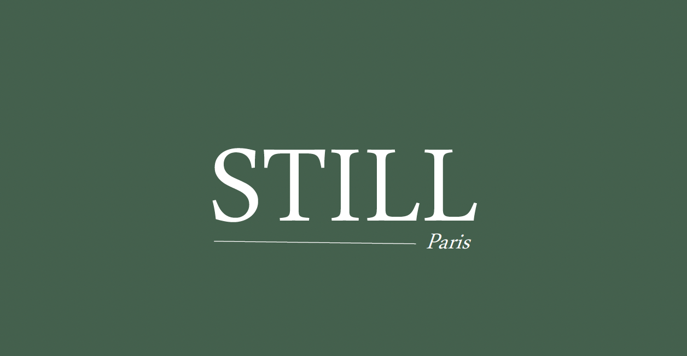
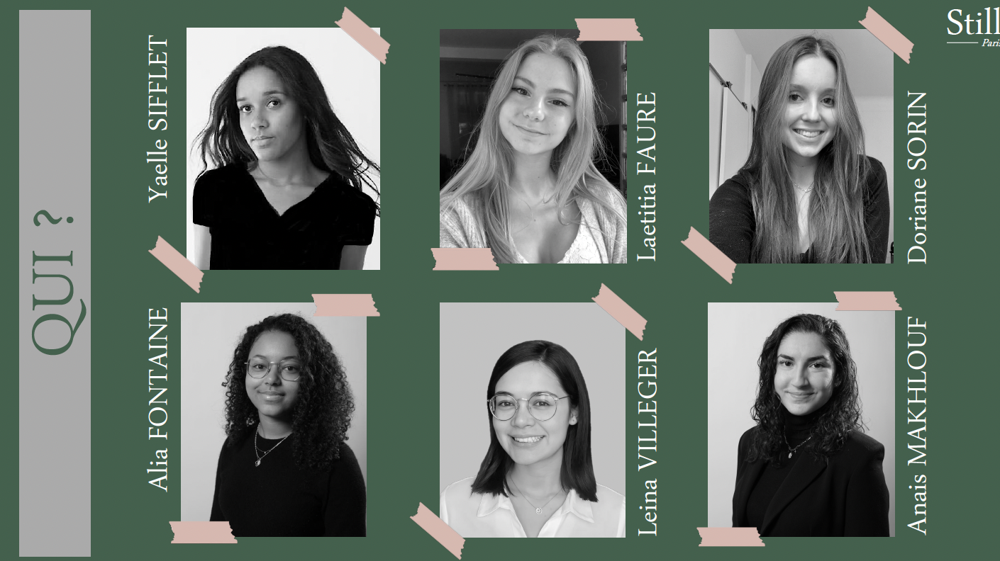
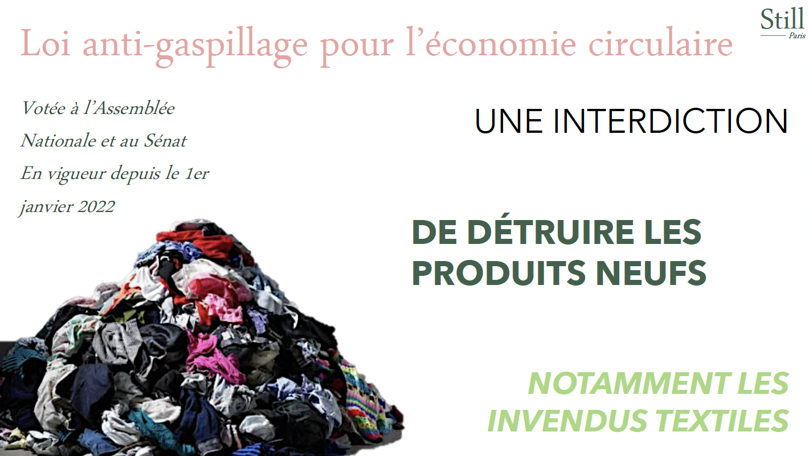
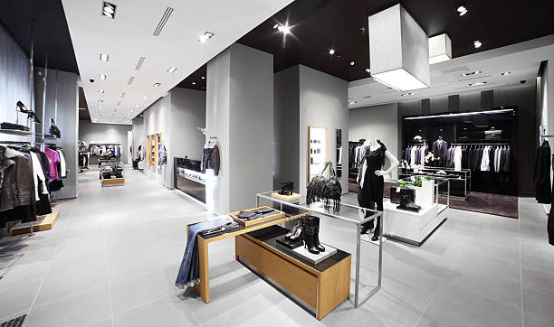

STILL
La mode pollue! C'est un fait, l’industrie textile est la deuxième plus polluante au monde. Et pourtant, chaque année il y a des invendus en fin de saison, des vêtements qui ont été créés pour rien. Auparavant, ils étaient détruits, engendrant plus encore de pollution. Mais depuis cette année, une loi l’interdit formellement. Une bonne nouvelle pour la planète et pour NOUS!Ainsi, pleines de créativité, de bonne volonté, et malgré notre absence évidente de talent de couturières, nous avons eu l’idée de créer Still, la première marque D’UPCYCLING DE LUXE.

Donner une seconde vie a vos vetements!
Saviez vous que plus de 700 000 tonnes de vetements de marques de luxe sont invendus en 2020?Pour pallier à ce gaspillage nous avons créer une start-up, originale et tendance,qui propose une solution durable
Nous découvrir

Notre équipe

La loi en vigueur

Nos magasins
Suivez Nous!
Cette start-up a trouvé une solution durable et originale à un soucis représente un gros enjeux du monde moderne
Alors, rejoignez nous!
Notre compte Instagram